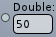
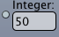
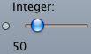
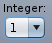
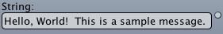

- Generated on Mon Jan 12 2026 01:43:01 for ug4 by
 1.9.8
1.9.8
|
ug4
|
In order to make functionality (such as C++ classes, methods and functions) available in the Lua-Script or the VRL, this functionality must be registered by the C++ programmer. By this registration, the programmer indicates, that the functionality is exported. Once exported the functionality is accessible in Script and VRL simultaneously.
This page gives an introduction to the registration process.
Registering is done in the *.cpp files in the folder ugbase/ug_bridge/bridges. Here are found several so called bridges that map (bridge) the functionality of different parts of the software project to the script (or VRL).
To understand the usage of the ug::Registry, lets start with the simple and exemplary file test_bridges.cpp. Here, you find several simple test classes and functions, written in normal C++. This functionality is now exported.
The function, where the registration takes place is RegisterTestInterface.
This function gets passed the Registry to which all functionality is added. In addition a Group string is added, that can be used to group functionality together. Usually all separated parts (e.g. Grid, Algebra, ...) are grouped, but this is not essential for the registration. (Therefore, lets not stress this point here)
Now, we come to the point to register a global C++-Function. We start with a very simple example, the famous Hello World. You will find in the file a global Function PrintHelloWorldToScreen:
In order to export this global function, you must use the syntax
For the Hello World function this reads:
Now, you can call this function in the Script. So, start the ug shell in your terminal:
user$ ./ugshell ******************************************************************************** * ugshell - v4.0.1 * * * * arguments: * * -outproc id: Sets the output-proc to id. Default is 0. * * -ex scriptname: Executes the specified script. * * -noquit: Runs the interactive shell after specified script. * * -noterm: Terminal logging will be disabled. * * -logtofile filename: Output will be written to the specified file. * * Additional parameters are passed to the script through ugargc and ugargv. * ******************************************************************************** ug:>
Now, just type the function:
ug:> PrintHelloWorld() Hello World ! ug:>
C++-Classes and their methods are registered similarly. Lets focus on the example class "Test":
This class is registered by
The following is done here:
add_class_< Class > the exported class is specified Test is specified the name of the class used in the script .add_constructor() is specified, that the constructor is available in the script. .add_method("MethodNameInSkript", Pointer to method) a method is exported. Now, you can create an object of this class from script using the ()-Operator:
ug:> myVariable = Test()
Calling a method of the class is done by using the :-Operator
ug:> myVariable:print_name() Name is Test
As shown in the last example, the .add_method() method allows to specify additional parameter related information. This is also true for add_function and add_class:
so the above test class registration should be extended to
notice how we use "" for empty strings like when there's no return value or parameters.
The syntax for the parameter information for N parameters is paramName1#paramName2#paramName3#...#paramNameN"</tt>, so you have to seperate the parameters with the hash sign #
(see below for additional parameter information).
The additional information you specify can be accessed in various ways:
<ul>
<li> The <a href="http://cave1.gcsc.uni-frankfurt.de/job/ug-bridge-doc/javadoc/">ug4 registry docu</a>.
See <a href="http://cave1.gcsc.uni-frankfurt.de/job/ug-bridge-doc/javadoc/CGCPU1.html">here</a> for a nice example.
<li> Autocompletion and hover information in the <a href="http://gcsc.uni-frankfurt.de/Members/mrupp/ug4-auto-completion/">UGIDE</a>.
<li> In the VRL
<li> In the ugshell with e.g. <tt>CG?</tt> or <tt>TypeInfo("CG")</tt> (also in LUA scripts)
</ul>
<hr>
@section secSTSupportedTypes Supported and not supported types
Supported Basic Types BT are :
@code
bool, int, size_t, float, double, const char *, std::string
\endcode
UT = User Defined Types. <br>
pUT = Set consisting of <tt>T*, const T*, SmartPtr<T>, ConstSmartPtr<T></tt> of User Defined Types T in UT. <br>
Then the supported types for parameters and return values are
- all types T in BT or pUT,
- <tt>std::vector<T>, const std::vector<T></tt> of all T in BT or pUT,
\note <tt>char</tt> is not a supported type. use int instead.
\note <tt>std::vector<T>&</tt> is not supported
<hr>
@section secSTHowToSpecifyVRLInformation How to specify VRL information for parameters
VRL uses a so called \em style identifier to choose between several possible type
representations. As noted above, the parameters are seperated by the hash sign #.
Additional \em options allow to specify range conditions, default values etc.
<hr>
@subsection secParamStrings Syntax
Parameter properties can be specified as follows:
@code
name | style | options
\endcode
The short form <tt>name</tt> is also valid if no additional option shall be
specified.
An example for return value properties:
<tt>c|default|min=1;max=10</tt>.
For the parameter string an additional separator is used to split the
individual parameter properties.
Parameters can be separated as follows (seperating two parameters):
@code
name1 | style1 | options1 # name2 | style2 | options2
\endcode
<hr>
@subsection secParamStringsAvaliableOptions Available styles and options
@subsubsection secParamStringsName Name
For the name it is safe to specify ASCII strings.
Roughly speaking, it is safe to specify strings consisting of letters from
the latin alphabet, numbers and characters from the following list:
<tt>^!"§$%&/()=?*,.-;:_<>@ (list may be not complete).
VRL supports simple HTML syntax (most tags from HTML 3.x are supported). Thus, it is possible to request bold or underlined names. Using colors and other enhanced stylings should not be used as this will most likely conflict with the VRL interface styles because in this case VRL cannot automatically change the text color accordingly.
\n are not supported. The characters | and # must not be used either.VRL uses a so called style identifier to choose between type representations. The most relevant type representations for UG are listed below (more details can be found in the VRL API documentation):
Type representations for the number type:
defaultmin, max, valueDouble|default|min=1D;max=100D;value=50D
Type representations for the integer type:
defaultmin, max, valueInteger|default|min=1;max=100;value=50
slidermin, maxInteger|slider|min=1;max=255
selectionmin, maxInteger|selection|value=[1,2,3]
Type representations for the string type:
defaultString|default
load-dialog or save-dialogendings, description"File Name|load-dialog|endings=[\"png\\",\"jpg\\"];description=\"Image-Files\\"</tt>
@image html img/vrl/load-dialog-01.png
<br>
@image html img/vrl/load-dialog-02.png
<hr>
- style identifier: <tt>selection</tt>
- possible options: <tt>value</tt>
- example string: <tt>String|selection|value=[\"string1\\",\"string2\\"]</tt>
@image html img/vrl/selection-string-01.png
<hr>
@section secSTHowToRegisterBaseClasses How to register Base Classes
Class hierarchies can also be exported to the Script.
Please note, that currently only <strong>one base class is supported</strong>
(i.e. multiply derivation is not possible in the registry).
In order to register a base class, use the usual C++-syntax:
@code
class Base
class Derived : public Base
{
public:
virtual ~Derived() {}
virtual void print()
{
UG_LOG("Derived::print() called
");
}
};
\endcode
Now, in registration, add the base class <strong>without</strong> constructor:
@code
// registering base class (without constructor)
reg.add_class_<Base>("Base", grp)
.add_method("print", &Base::print);
\endcode
When registering the Derived class, add also the Base class as a second template
argument.
@code
// registering derived class
reg.add_class_<Derived, Base>("Derived", grp)
.add_constructor();
\endcode
<hr>
@section secSTHowToRegisterOverloadedFunctions How to register Overloaded Functions
When function is overloaded, the compiler can not find the function
you want to register by only passing the method pointer.
You have to explicitly specify the method signature to choose between the
possibilities:
@code
int MyGlobalFunction(int parameter1, int parameter2);
bool MyGlobalFunction();
\endcode
@code
// register MyGlobalFunction overloads
reg.add_function("MyGlobalFunction", static_cast<int (*)(int parameter1, int parameter2)>(&MyGlobalFunction));
reg.add_function("MyGlobalFunction", static_cast<bool (*)()>(&MyGlobalFunction));
\endcode
<hr>
@section secSTHowToRegisterOverloadedMethods How to register Overloaded Methods
@code
class Test
{
public:
// ... something ...
// overloaded functions
int print() {UG_LOG("Test::print()
"); return 0;}
int print() const {UG_LOG("Test::print() const
"); return 1;}
};
\endcode
@code
// register class "Test"
reg.add_class_<Test>("Test", grp)
.add_method("print", static_cast<int(Test::*)()>(&Test::print))
.add_method("print", static_cast<int(Test::*)() const>(&Test::print));
\endcode
<hr>
@section secSTHowToRegisterOverloadedConstructors How to register Overloaded Constructors
Constructors with parameters and several (overloaded) Constructors are also
possible.
Since it is impossible to take the function pointer of a constructor the special
method <tt>add_constructor<SignatureFunction>(...)</tt> must be used.
@code
class Test
{
public:
Test() { UG_LOG("Test::Test() constructor used.
")}
Test(const char* msg)
{
UG_LOG("Test::Test(const char*) constructor used.
")
UG_LOG("Message is: '"<<msg<<"'.
");
}
};
\endcode
@code
// register class "Test"
reg.add_class_<Test>("Test", grp)
.add_constructor()
.template add_constructor<void (*)(const char*)>("Message");
\endcode
The template argument of the <tt>add_constructor</tt> method must be a global
function pointer with void return value.
The signature of the function pointer type is used to get the arguments of the
constructor.
In total these informations can be passed when registering a constructor:
@code
template <typename TFunc>
ExportedClass<TClass>& add_constructor(std::string paramInfos = "",
std::string tooltip = "", std::string help = "",
std::string options = "") paramInfos — a list of parameter names (and options) separated by '#' (see above) tooltip — some information about the usage of the constructor help — help informations options — style option of the constructor itself (for visualisation)